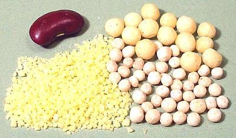
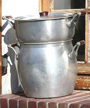

Couscous

[Kuskus (Turkey); Couscous (Morocco);
Maftoul, Moghrabieh (Lebanon); Seksu (Berber); Kusksi (Libya); Keskesu
(Tuareg); Kouskousaki (Greece)]
Couscous is a form of pasta made of hard wheat formed into grains or beads of various sizes. In some small regions of North Africa couscous is made from pearl millet or barley rather than hard wheat.A West African variety called Attiéké is made from cassava and in Brazil couscous is made from pre-cooked flakes of sweetcorn.
The tiny bits to the left in the photo are North African couscous - size moyen (medium). The photo specimens were made in Marrakech, Morocco and the grains are typically 0.06 inch / 1.5 mm. This form is traditionally made by rolling moistened semolina between the hands and sieving the result until a uniform size is obtained. It is always steamed, never boiled.
The two at the right are Levantine pearl couscous. This type is often erroneously called "Israeli couscous" which name properly belongs to a rice grain shape unique to Israel (a rice replacement product that largely failed). The pearl shape is indigenous to Lebanon and Jordan. The small (about 0.14 inch / 3.5 mm), called "maftoul" were made in Jordan. The larger (about 0.22 inch / 5.5 mm), called "moghrabieh" were made in Lebanon. These forms are boiled or used in soups and stews like regular pasta rather than steamed.
Packaged couscous preparations sold in markets in the US are always made up with "instant couscous". It is similar to the North African in form but pre-steamed and dried so it cooks in 5 minutes by adding boiling water. The result, as you might expect, is inferior to the real thing.
Hungarian Tarhonya is
sometimes labeled "couscous" but it is normally formed by grating a ball of
dough, not by rolling as proper couscous is.
|
Buying & Storing Supermarkets in the US generally carry boxed preparations based on "instant couscous". For real couscous check ethnic markets serving communities from the Middle East. The photo specimens were all purchased at a market in Los Angeles that serves communities from the Middle East, India, Persia, Armenia, Southern Russia and Mexico. Store couscous in tightly sealed containers away from moisture or excessive heat and it should be fine for several years. 
Cooking: The traditional device for cooking North African
couscous is the kiskas (couscousiere). An aromatic stew
(Tagine) is cooked in the bottom pot and the couscous is cooked in the
steamer pan on top. Other forms of steamer can also be used in a pinch.
Detailed instructions can be found on my recipe page:
Couscous - Moroccan.
Photo distributed under
Creative Commons
Attribution-Share Alike 3.0. |